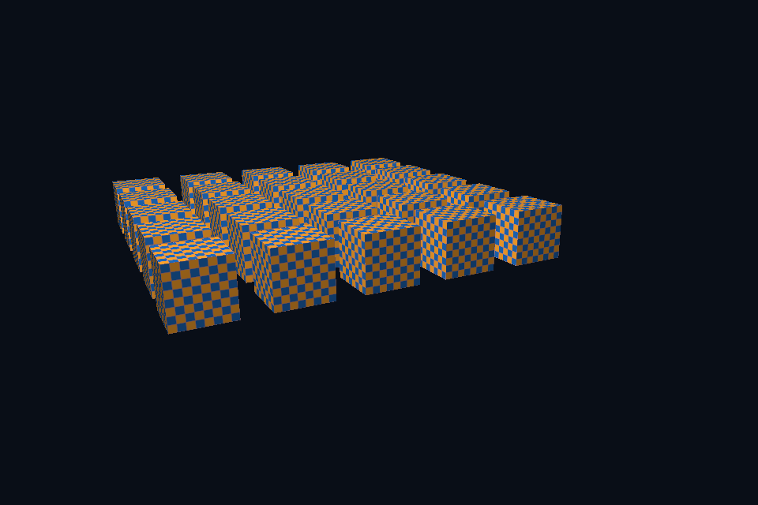

第 40 课 · 遮挡、清除、比较与写入 · DirectX 12
54 课目录 · 对照精讲 · 上一课 · 下一课
本课目标与先修
学习目标：解释“遮挡、清除、比较与写入”解决的问题，找到实际对象和参数，运行对应实验并用数据/画面证明。先完成前一课，并能说明它交付的对象与完成条件；本课在该依赖上增加新契约。
为什么需要这一层
深度正确需要存储、测试启用、比较函数、写入策略和清除值同时匹配投影。当前普通 0..1 深度使用 clear=1、LESS；reversed-Z 则要一起改变整套约定，不能只换一个比较枚举。
DirectX 12 的对象、参数与执行推导
PSO DepthEnable/DepthWriteMask/DepthFunc 配合 DSV 与 ClearDepthStencilView。关闭写但保留测可以服务某些透明路径，却不适合不加区分地替换所有不透明绘制。
对照 Vulkan 原生：相同问题的另一种分工
深度附件转到合适布局，早/晚深度阶段的写访问与后续用途建立依赖。实例化场景帮助观察 draw 顺序与几何遮挡分工；深度附件不由 vertex buffer 自动产生。
关键参数与可检查不变量
先为每项指出源码中的创建/绑定位置，以及证明它成立的实际日志、字节或图像。数值中的设备限制以查询为准；固定实验尺寸不当作所有设备的上限。
nvpro_core2 框架对照
视口 target 的 depth 与颜色尺寸共同变化。UI 能显示纹理不证明场景内部深度状态正确，应查看离屏 depth 或对应事件。
这部分是原生 Vulkan 各课的框架对照，框架可运行入口仍为原有六课。如果本节需要新接入工作，会按正文说明；不把原生实验当作已完成的框架实现。
运行与实际检查
从合集根目录执行；普通图形程序 Esc 退出，设备/计算/诊断程序输出结果后结束。从“开始学习.cmd”进入本页时，表格可直接点击运行。
cmake --preset dx12
cmake --build --preset dx12-debug --target dx07_depth_instancing --parallel 4
.\DirectX12\build\bin\Debug\dx07_depth_instancing.exe
ctest --preset dx12-debug -R "^dx07_depth_instancing$" --output-on-failure
检查三个层次：创建/绑定/提交的接口约束；数据读回或目标画面；资源使用结束后的回收。诊断实验用合法信息或查询证明渠道可用，不故意保留 API 错误。图形 smoke 的像素检查与数值实验的逐项检查不同，具体实现见源码。
关键实现：从当前源码定位
来自 DirectX12/common/dx12_course.hpp，第 410—453 行。下列是当前仓库的局部切片，可能在函数中间结束；完整上下文请打开文件，切片不作为单独可编译程序。
pso.DepthStencilState.DepthEnable = mode >= 5;
pso.DepthStencilState.DepthWriteMask =
mode >= 5 ? D3D12_DEPTH_WRITE_MASK_ALL : D3D12_DEPTH_WRITE_MASK_ZERO;
pso.DepthStencilState.DepthFunc = D3D12_COMPARISON_FUNC_LESS;
pso.DepthStencilState.StencilReadMask = pso.DepthStencilState.StencilWriteMask = 0xFF;
if (mode >= 4)
pso.InputLayout = {elements, 3};
pso.PrimitiveTopologyType = D3D12_PRIMITIVE_TOPOLOGY_TYPE_TRIANGLE;
pso.NumRenderTargets = 1;
pso.RTVFormats[0] = DXGI_FORMAT_R8G8B8A8_UNORM;
pso.DSVFormat = DXGI_FORMAT_D32_FLOAT;
pso.SampleDesc.Count = samples;
dxCheck(c.device->CreateGraphicsPipelineState(&pso, IID_PPV_ARGS(&pipeline)));
}
// 绑定 PSO、root signature、descriptor heap 和顶点输入，再逐对象更新 root constants。
void render(int w, int h, float time) {
Frame f = overrideFrame.value_or(frame(mode, float(w) / h, false));
if (frameProvider)
f = frameProvider(float(w) / h, time, false);
void* mapped;
D3D12_RANGE empty{0, 0};
dxCheck(uniform->Map(0, &empty, &mapped));
std::memcpy(mapped, &f, sizeof(f));
uniform->Unmap(0, nullptr);
auto cmd = c.cmd.Get();
cmd->SetPipelineState(pipeline.Get());
cmd->SetGraphicsRootSignature(signature.Get());
ID3D12DescriptorHeap* heaps[] = {srvHeap.Get()};
cmd->SetDescriptorHeaps(1, heaps);
cmd->SetGraphicsRootConstantBufferView(0, uniform->GetGPUVirtualAddress());
cmd->SetGraphicsRootDescriptorTable(2, srvHeap->GetGPUDescriptorHandleForHeapStart());
cmd->IASetPrimitiveTopology(D3D_PRIMITIVE_TOPOLOGY_TRIANGLELIST);
if (mode >= 4) {
cmd->IASetVertexBuffers(0, 1, &vb);
if (indices)
cmd->IASetIndexBuffer(&ib);
}
for (auto d : overrideDraws.empty() ? draws(mode, time) : overrideDraws) {
cmd->SetGraphicsRoot32BitConstants(1, 20, &d, 0);
if (indirectArguments)
cmd->ExecuteIndirect(
indirectSignature.Get(), 1, indirectArguments.Get(), 0, nullptr, 0);
else if (mode == 3)
阅读时按“前置对象 → 参数/布局 → 录制/调用 → 完成/可见性 → 释放”五步标注。共享 helper 减少重复代码，但不会取消每课的 API 契约。
受控修改实验
固定几何和相机，只把 clear 改为零而继续 LESS，预测结果。
先记录预测，再只改一个因素；保留基线与修改后的输出。不要同时改变 shader、资源范围和同步，这样即使结果变好也无法归因。
参考推导与通过标准
大部分普通非负深度不小于零，会被拒绝。若要反向深度，应连同投影、比较和其他深度公式一起设计。
常见失败与排查顺序
前一遍关闭 depth write 后未恢复，或忘记每帧清除，可能让问题随帧累积，看起来像随机闪烁。
先看第一条错误和当前执行路径，再看实际数据/绑定，最后看 shader 与画面。需要 GPU 证据时抓取正常交互帧；仅四帧的 smoke 适合自动检查，不适合手动抓帧。
自测与本课交付
能否不看源码回答：固定几何和相机，只把 clear 改为零而继续 LESS，预测结果。
提交一份简短记录：输入与假设、唯一修改、预期、实际证据、原因、是否恢复基线。如果只能复述函数名而说不清何时允许访问/释放，先回到本课的数据流。
官方阅读位置与当前工程差异
指定 Vulkan 教程对应位置。DX12 路线按同一概念顺序建立映射，其对象与约束以 Microsoft 文档和本后端代码为准。49—54 课包含在基础/compute 之后加入的工程扩展。
版本与资料说明 · 调试 · 功能完成度
固定输入的实际 GPU 读回
